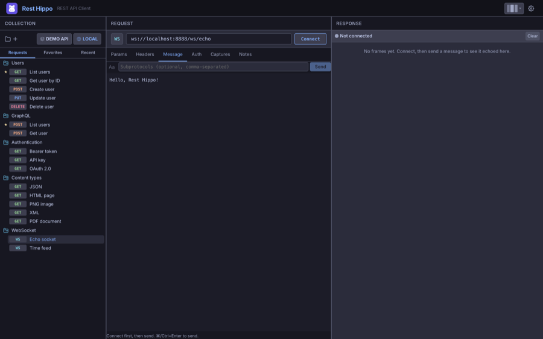
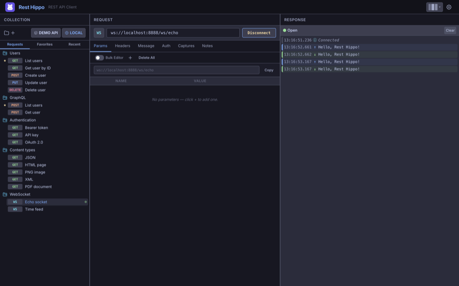

WebSockets
Rest Hippo is also a WebSocket client. Create a WebSocket request from the tree
(right-click a folder → Add WebSocket Request, or right-click the +
button above the tree and choose Add WebSocket Request), and point it at a
ws:// or wss:// URL.
The WebSocket editor
A WebSocket request looks much like an HTTP one, but the request bar shows a WS label and a Connect button, and the body is replaced by a Message composer:

- Message — the frame you'll send. Toggle the format between Text (
Aa) and JSON ({ }); JSON messages support{{variables}}. - Subprotocols — an optional comma-separated list offered during the handshake.
- Params, Headers, and Auth apply to the opening handshake, just as they do for HTTP requests.
Connecting and sending
Click Connect to open the socket. The status indicator shows the connection state — Connecting…, Open, Closing…, Closed, or Error — and the button becomes Disconnect.
Once connected, edit your message and click Send (or press ⌘/Ctrl+Enter). Every frame is logged in the frame log on the right:

The frame log is a timestamped record of the whole session:
- Sent frames (outgoing messages),
- Received frames (incoming data — including server pushes you didn't ask for), and
- System frames (lifecycle events: Connected, Disconnected, errors).
JSON payloads are pretty-printed automatically. Use Clear to reset the log; it also clears when you disconnect.
A failed handshake (for example a
401rejection) surfaces in the log as an Error frame with the status, so you can tell a refused upgrade from a dropped connection.
Next: Reading Responses →